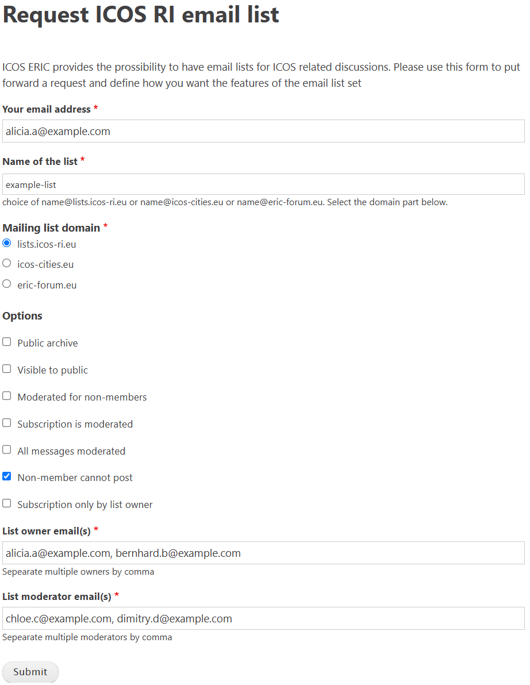

Request a new mailing list
As a member of the ICOS community, you can request a new mailing list for a project, group, or other purpose.
In order to do so, please submit a request here. A completed request is shown below:

Fill in your email address, which we will use to notify you of the list's creation, and choose a name for the email list and the mail list domain you would like to use. The will determine the email address of your list (Name of the list + Mailing list domain)
Next, you can select which options you would like, determining how visible the list is and how you want the list to be moderated.
- Public archive: Enables a public archive of your mailing list, allowing anybody to read all messages sent to the list.
- Visible to public: Allows the list to appear on the ICOS mailing list home page to non-members.
- Moderated for non-members: Enables moderation for emails sent from addresses that are not subscribed to the list.
- Subscription is moderated: Enables subscription moderation, which requires subscribers to be approved by a moderator before being added to the mailing list.
- All messages moderated: Enables moderation for all emails sent to the list, including those from members. This is useful for lists that are intended for announcements rather than discussion.
- Non-member cannot post: Limits mail to the list to only be sent by members; non-member emails will be discarded entirely rather than held for moderation.
- Subscription only by list owner: Users may be subscribed to the list only by a list owner. Subscription moderation can occur, but only an owner of the list will be able to approve subscribers.
Finally, add the emails of the list owner(s) and moderator(s). They must already have accounts on the ICOS mailing list. Click the Submit button, and then you should receive an automatic notification confirming your request was submitted.
The list will be created within a few working days, and you, the owner(s), and the moderator(s) will be notified when it is ready.